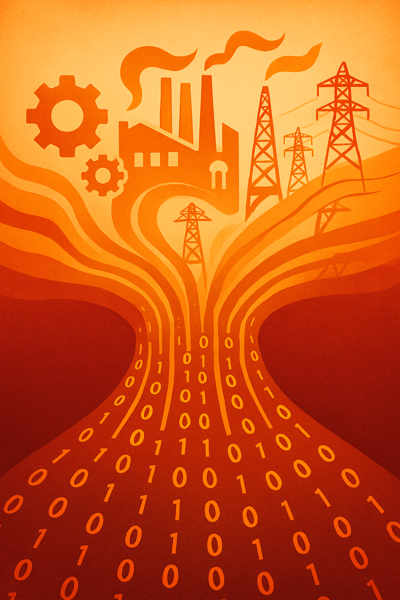

![]()
%%{init: {"theme": "neo", "look": "neo"}}%%
flowchart TD
H1["20th-century paradigm"]
H2["Continuous orchestration"]
A1["Monthly S&OP cycle"]
A2["Plan freeze windows"]
A3["Variance vs plan"]
B1["Always-on sensing"]
B2["Concurrent recalibration"]
B3["Closed-loop execution"]
H1 --- A1 --> A2 --> A3
H2 --- B1 --> B2 --> B3 --> B1
A1 -. "shift in ontology" .-> B1

Introduction: the end of planning as we know it
In the late 20th century, Sales and Operations Planning (S&OP) emerged as a crown jewel of corporate governance. It provided a structured, cross-functional process for aligning demand forecasts with supply capabilities on a regular cadence (typically monthly)1. By translating strategy into operational plans and reconciling sales, production, and finance perspectives, S&OP became the mechanism by which top management maintained equilibrium and control in an industrially stable era. In that relatively predictable environment, time itself was discretized into planning intervals – monthly forecasts, quarterly targets, annual budgets – as a cognitive technology to manage complexity. Freezing time into these neat calendar chunks enabled organizations to think and decide deliberately, imposing order on what might otherwise be chaotic business dynamics.
1 See: Kalla, C., Scavarda, L. F., Caiado, R. G. G., & Hellingrath, B. (2025). Adapting sales and operations planning to dynamic and complex supply chains. Review of Managerial Science. DOI
Yet the very strengths of S&OP’s periodic, consensus-driven approach have turned into sources of rigidity in today’s world of volatility, uncertainty, complexity, and ambiguity (VUCA). Globalization, rapid technology cycles, and external shocks (from financial crises to pandemics) have upended the assumption that the next period will resemble the last. Even companies long proud of their best-in-class S&OP processes find they cannot keep up with the speed and turbulence of modern markets. The problem is not merely one of frequency (monthly updates suddenly feel too slow) but of philosophy: a calendar-bound plan assumes a world of periodic equilibria, whereas contemporary reality is more like a continuous whitewater flow. In a VUCA environment, fundamentals can shift overnight – rendering yesterday’s agreed plan obsolete and even undermining the very notion of a fixed plan distinct from execution.
This essay advances the thesis that enterprises are on the cusp of a paradigm shift from episodic planning to continuous orchestration. We will argue that the classical ontology of planning – which posits planning and execution as separate domains and time as a series of frozen intervals – is giving way to a new ontology of constant flow. Enabled by technologies like AI, IoT, digital twins, and multi-agent simulations, planning is becoming an always-on, perpetual negotiation among human decision-makers, intelligent algorithms, and physical systems at the edge. In this vision, the enterprise behaves less like a bureaucratic machine executing a plan and more like a living, learning system orchestrating itself in real-time. The transition is not just technological but deeply organizational and philosophical. It compels us to rethink governance, decision rights, performance metrics, and even the cultural meaning of management.
In the sections that follow, we situate S&OP historically as a product of 20th-century equilibrium thinking, then examine why static, calendar-driven coordination falters in the face of continuous disruption. We explore the rise of continuous data signals and their convergence with emerging tech, define the concept of continuous orchestration, and consider how governance and organizational culture must evolve to support it. Finally, we reflect on the deeper implications of viewing organizations as living systems in flow, where the old boundaries between planning and execution, between the map and the territory, increasingly blur and disappear. The tone is academic and visionary: rather than offering quick corporate how-tos, it invites the reader to reconceptualize enterprise planning from the ground up – to rethink the very ontology of organized activity in a world where change never stops.
The historical role of S&OP/IBP: stability through periodicity
In order to appreciate the coming transformation, it is crucial to understand the original raison d’être of S&OP in the late 20th century enterprise. S&OP arose in the 1980s as a stabilizing governance mechanism for industrial firms. Pioneers like Oliver Wight2 framed it as a cross-functional handshake – a monthly meeting-of-minds where executives from sales, production, procurement, and finance would reconcile their plans into a single consensus outlook. The core idea was to establish one agreed game plan for the business, usually over a 12-to-24-month horizon, at an aggregate (product family) level. This would synchronize all departments, prevent siloed goal conflicts, and allow top management to steer the ship by a steady compass heading.
2 See Palmatier, G. E., & Crum, C. (2002). Enterprise sales and operations planning: Synchronizing demand, supply and resources for peak performance [J. Ross Publishing integrated business management series]. J. Ross Publishing. ISBN 9781932159004
Historically, S&OP’s popularity grew because it delivered equilibrium and predictability in what were, by today’s standards, relatively predictable markets. The late 20th century corporate environment – especially for manufacturing-centric firms where S&OP was born – operated on longer product cycles and more stable demand patterns. In this context, a monthly or quarterly cadence of planning was sufficient to capture meaningful changes. The planning horizon extended over many months; strategic plans spanned years. The calendar itself became a scheduling device for organizational attention – an implicit contract that “we will replan on the first Monday of every month” or “adjust forecasts every quarter.” This periodicity acted as a cognitive management tool, chunking continuous time into reviewable segments that humans and legacy IT systems could handle. In effect, management institutionalized a belief that by freezing time at regular intervals, they could better grasp and manage the complex whole.
It is worth noting that Integrated Business Planning (IBP) is an evolution of S&OP that emerged in the 2000s to broaden this cross-functional synchronization. IBP extends the scope beyond operations into finance and strategy, aiming to align the entire enterprise (including product development, marketing, and capital allocation) to one plan. But even IBP, for all its enterprise-wide ambit, preserved the essential rhythm of S&OP: it remained a continuous process operated on a monthly cycle, as opposed to traditional annual budgeting or sporadic strategy reviews. The continuity of IBP lay in its rolling nature – every month, a planning cycle produces a rolling 24-month plan that is updated with the latest information. However, continuous here still means periodic (monthly) rather than truly unceasing. IBP improved on the silo-breaking and financial integration of S&OP, but it did not fundamentally challenge the calendar-bound paradigm. It assumed, just as S&OP did, that the business can be guided via a series of synchronized snapshots – that governance is achieved through regular, formal planning events.
This paradigm made sense in an era often characterized by what systems theorists call equilibria. The implicit model was that after each planning meeting, the enterprise would execute according to plan, perhaps with minor variance, until the next meeting rebalanced everything. S&OP functioned as a stability-inducing feedback loop in relatively stable times. By bringing key stakeholders together to adjust forecasts and resources, it dampened oscillations (like the infamous bullwhip effect in supply chains) and created confidence that all parts of the company were rowing in the same direction. In many ways, S&OP became the management control system for translating strategy into operations. It was praised for fostering discipline, cross-functional communication, and top-down control: “Top management’s handle on the business” was a common description in practitioner literature.
However, as business complexity grew, cracks in this paradigm began to show. By the 2010s and certainly by the 2020s, executives increasingly observed that a static monthly S&OP cycle felt too sluggish and too coarse-grained for the new environment. Global supply chains were hit by tariff wars, Brexit, natural disasters, and then the COVID-19 pandemic – all introducing sudden discontinuities that laughed at month-old plans. Demand patterns became more lumpy and less predictable due to e-commerce, social media trends, and fickle consumer behavior. The once sedate competitive landscape turned into a 24/7 global bazaar, where a price change or a viral tweet could send demand for a product soaring or crashing in days. Internally, companies themselves grew more complex, with extended product portfolios, outsourced manufacturing, and on-demand services. In such settings, the latency inherent in a fixed S&OP cycle started to resemble a dangerous delay. Analysts and consultants began to question: could a process designed in the assumption of relative stability remain effective in a world of continuous disruption?
The answer, increasingly, was no. A 2025 study by Kalla et al.3 notes pointedly that traditional supply chain planning relies on the assumption “that the future would be much like the past” and that relationships in the system are stable and linear. This enabled a focus on optimal efficiency and control – but it is a questionable assumption today. Modern supply chains and markets are dynamic, complex, and difficult to predict; they behave less like clockwork and more like weather systems. As consultancies often reckon, even organizations with well-established S&OP disciplines eventually confront the limits of calendar-driven coordination, since increasing volatility, shifting inputs, and organizational silos steadily erode the reliability of their plans and expose the fragility of traditional governance models. In other words, it is not merely a matter of doing S&OP faster or more often; the very architecture of periodic re-planning begins to break down when change is continuous and discontinuous (if that paradox makes sense). The stabilizing feedback loop of S&OP, which assumed perturbations to be occasional and correctable in monthly meetings, cannot maintain stability when perturbations are continuous.
3 See Palmatier, G. E., & Crum, C. (2002). Enterprise sales and operations planning: Synchronizing demand, supply and resources for peak performance [J. Ross Publishing integrated business management series]. J. Ross Publishing. ISBN 9781932159004
Organizations tried to adapt within the existing paradigm. Some shortened the cycle (moving to biweekly or even weekly mini-S&OP updates). Some created separate fast-response processes alongside S&OP – notably, Sales & Operations Execution (S&OE) to handle day-to-day or week-to-week adjustments. For instance, in some case firms split out an S&OE process with a weekly frequency and 3-month horizon to manage short-term supply/demand issues that the monthly S&OP was too slow to address. The S&OP and S&OE processes were linked by continuous information exchange but managed separately, each with different cadence and granularity. These adaptations yielded improvements, yet they essentially bolted “fast reflexes” onto a body still governed by a slower brain. The deeper dualism – plan versus execute, planning meeting versus operational reality – remained intact.
Thus, as we stand today, S&OP/IBP is at a crossroads. It has been, and in many cases remains, invaluable – a foundational practice for integrated management. But the 20th-century model of stability through periodicity is reaching its limits. The historical role of S&OP as a stabilizer needs reimagining for a world where instability is the norm. The stage is set for a more fluid model of coordination, one that treats time not as a series of discrete planning buckets but as a continuous flow of sensing and responding. Before defining that new model, however, we must critically examine the ontological assumptions of discrete planning and why they are increasingly problematic.
The ontology of discrete planning: dualism and its discontents
Classical planning, as institutionalized in S&OP and similar processes, rests on a powerful ontological dualism: the separation of planning and execution in both time and mind. In this view, planning is an activity that happens at specific moments (in meetings, in plan documents, in forecasting tools) and produces a representation – a forecast, a plan, a budget – which is then handed off to be executed in the real world until the next planning cycle. Time is thereby quantized into planning intervals: we make a plan (freeze time), then we execute for a period (let time flow), then stop and replan, and so on. This stop-go rhythm is taken for granted in management. It is as if the organization continually alternates between two modes of existence: a reflective mode (planning) and a doing mode (execution). A telling manifestation is the ubiquitous variance tracking: we measure success by comparing execution outcomes (actuals) to the plan, reinforcing the sense that the plan is one reality and execution another, and that management’s job is to minimize the difference between the two.
This act of freezing time into intervals is both an enabler of control and, increasingly, a source of rigidity. By freezing time – say, locking in a production plan for the next 4 weeks – managers can treat a moving target as stationary long enough to make decisions. Discreteness enables analysis; it creates a simplified world where, for example, demand for the month of October is taken as a known quantity (even if it is just a forecast), allowing one to calculate production and inventory needs with a feeling of certainty. In essence, traditional planning ignores the fluidity of reality in order to exert control. The reward is stability and clear targets; the cost is loss of adaptability between planning checkpoints.
Conceptually, this reflects what one might call the Newtonian worldview in management. Time is an independent variable that we can slice, and planning is like taking successive snapshots of a moving process, with the hope that each snapshot allows us to recalibrate the machine. The metaphor of an organization as a machine is in fact deeply embedded in classical management theory (dating back to Frederick Taylor’s scientific management in the early 1900s). Taylorism explicitly separated planners from doers: managers would scientifically determine the one best way, and workers would implement it. This managerial cosmology holds that with enough information and analysis, one can design an optimal plan (whether a factory schedule or a strategic 5-year plan), and that performance consists in sticking to that plan (deviations are errors to be corrected at the next planning session). The prevalence of phase-gate project plans, Gantt charts, budgets, and MRP systems throughout the 20th century attests to how deeply this plan-execute dualism penetrated organizational practice. Success was often defined as execution of the plan on time and on budget – a definition that implicitly assumes the plan was correct and that the world would cooperate with it.
However, as the American philosopher Mike Tyson once wryly observed, “Everybody has a plan until they get punched in the face.” Military strategists a century earlier said something similar: “No plan survives first contact with the enemy.” These adages point to a fundamental flaw in the ontology of discrete planning: the notion that one can separate the map from the territory, the model from the reality, without consequence. In stable environments, the flaw was muted – one could reasonably assume continuity such that the plan would match reality closely for a while. But in unstable, complex environments, the dualism becomes a dangerous illusion of control4. We start to see plans as almost fictional narratives – comforting stories we tell ourselves about an inherently unpredictable future. When uncertainty is high, the plan-vs.-actual duality can even be counterproductive: organizations may cling to plans long after they’ve become irrelevant, or conversely, scrap plans so frequently that the planning exercise loses credibility and exhausts participants.
4 See: Vasbinder, J. W., van der Leeuw, S., & Galaz, V. (2024). The illusion of control. Global Perspectives, 5(1), 95001. DOI
Critically, discrete planning enforces a single-frame worldview: it forces agreement on one expected future per cycle (for instance, one demand forecast, one operations plan). This is necessary for coordination – everyone marching to the same beat – but it also suppresses diversity of hypotheses. If conditions change or if the chosen forecast is wrong (as it often is, especially in VUCA conditions), the organization can become brittle, unable to quickly pivot because it committed to a singular outlook. The notion of plan freeze in supply chain planning captures this: once the plan is frozen, execution takes over and planners are reluctant (or even prohibited) from changing the plan until the next cycle. This approach optimizes efficiency under expected conditions but struggles with surprise. It also creates that dreaded phenomenon known to planners worldwide: the end-of-month scramble or the hockey stick effect (when reality diverges from plan until late in the cycle, then emergency adjustments happen in a rush). Such dynamics are a direct result of the rigidity introduced by discrete planning intervals.
Furthermore, the planning dualism fosters an us-versus-nature epistemology. It implies that the world “out there” is something to be predicted and controlled through our plans. There is a comfortable duality in thinking that inside the planning meeting we create order, while outside in the market there is disorder which we attempt to tame. This mindset can blind organizations to more emergent, interactive understandings of strategy. Karl Weick5 famously suggested that organizations enact their environments as much as they react to them – meaning that the way we frame and act creates part of the reality we then face. In discrete planning mode, it’s easy to fall into what Weick called retrospective rationality, where after execution we explain deviations by updating assumptions, but we may miss the deeper point: the separation of planning and doing is itself a choice that shapes outcomes.
5 See: Weick, K. E. (1995). Sensemaking in organizations. Sage. ISBN: 9780803971776
A conceptual critique can be made that the forecast-vs.-actual dualism is analogous to the Cartesian mind-body split, applied to organizations. The plan is like the mind (the ideal image of what should happen) and execution is the body carrying it out. As long as the environment is benign, mind and body stay aligned. But when the environment is turbulent, this alignment snaps – the body is battered by reality while the mind, until it reconvenes (at the next meeting), is essentially blind or in denial. In fast-moving situations, this can be fatal. We see an example in fast-paced industries: by the time a monthly S&OP meeting reviews last month’s numbers, a nimble competitor might have already exploited a trend and seized market share. Traditional planning is often reactive, no matter how much we talk of being proactive – it reacts to last cycle’s variances.
The ontology of discrete planning also underpins traditional performance metrics like forecast accuracy, adherence to plan, budget variance, etc. These metrics reinforce the idea that deviation is failure, rather than potentially useful information. They can create a culture of plan commitment that discourages flexibility. For example, teams might knowingly continue executing a flawed plan because admitting it and changing mid-cycle would be seen as a failure (or would create internal conflict over targets). The discrete cycle thus can induce a kind of organizational inertia or even hypocrisy – where everyone knows the plan is out of date, but they feel they must work to plan and wait for the formal reset at next cycle.
In summary, the legacy paradigm’s ontology served a purpose: it made the complex manageable by dividing time and separating the act of planning from the act of doing. But this ontological stance is increasingly at odds with a reality of constant flux. The dualism becomes dysfunctional when the pace of change is faster than the planning cycle, or when systems are so complex that their behavior cannot be captured by a single plan scenario. From a systems theory perspective, the idea of an optimal plan resembles a mirage: in complex adaptive systems exposed to continuous perturbations, the predictive power of long-range planning diminishes rapidly, as feedback loops, non-linear interactions, and emergent dynamics overwhelm static forecasts6. In practice, we are often precisely wrong rather than roughly right, with cognitive biases such as the planning fallacy—our tendency to underestimate time, costs, and risks—further lulling us into false confidence in static plans7.
6 See: Meadows, D. H. (2008). Thinking in systems. Chelsea Green Publishing. ISBN: 9781603580557
7 Kahneman, D., & Tversky, A. (1979). Prospect theory: An analysis of decision under risk. Econometrica, 47(2), 263–291. DOI
Recognizing the limits of this ontology is the first step toward a new one. The emerging view – which continuous orchestration embodies – rejects the strict separation of planning and execution. It treats time more like a flowing continuum than a series of buckets. It posits that planning is not a distinct phase or meeting, but an ongoing, distributed capacity of the organization. In effect, it moves from dualism to monism: planning and execution become two aspects of the same seamless process, always unfolding. To use a metaphor, rather than the organization toggling between a thinking head and a doing body, the organization becomes more like a brain that is thinking and acting at the same time, everywhere, through a network of sensing and responding agents. This is a radical shift in ontology. Before fully elaborating continuous orchestration, however, we need to examine the technological and data revolution that has both enabled and necessitated this shift – the rise of continuous signals in the enterprise.
The rise of continuous signals: from event-driven to signal-driven enterprises
Several converging technological trends in the past decade have flooded organizations with continuous streams of data, fundamentally changing the game of planning. Where once managers operated with relatively sparse, discrete data points (e.g. monthly sales reports, weekly inventory levels), today there is a firehose of real-time information pouring in: sensor readings from Internet of Things (IoT) devices, clickstream data from digital channels, social media sentiment, location data, telematics, and more. This data exhaust of modern operations provides a rich, always-on situational awareness that was unimaginable in the classic S&OP era. Enterprises are increasingly instrumented and modeled as living systems through digital twins, which create virtual replicas of physical operations and update them in real time. Meanwhile, advances in AI (especially machine learning) mean that algorithms can digest these streams to detect patterns or anomalies in the blink of an eye. And simulation techniques – notably agent-based simulation – allow firms to explore myriad what if scenarios continuously, rather than relying on a single baseline plan.
In effect, we have transitioned from a world of data snapshots to one of data streams. The traditional enterprise systems (ERP, MRP, even older BI dashboards) were built around periodic batch updates – they reflected the state of the business as of last night, or last week, or last month. Decisions were thus event-driven: triggered by a report or a meeting (for example, an inventory report triggers a restock decision, a quarterly result triggers a strategy tweak). Now, with streaming data and IoT, the events can be continuous. Every moment, sensors might be flagging micro-deviations: a machine’s vibration pattern changes (predictive maintenance alert), a delivery truck deviates from route, a customer’s browsing behavior indicates a new trend. The enterprise is increasingly immersed in a real-time environment where relevant signals are always arriving. Some have dubbed today’s companies signal-driven enterprises, where success depends on the ability to sense and respond to signals faster than competitors.
This abundance of real-time data is double-edged: it enables continuous orchestration but also necessitates it. On one hand, if used properly, continuous signals can vastly improve foresight. For instance, demand sensing techniques now use high-frequency inputs (like point-of-sale data, Google Trends, weather, social media buzz) to adjust forecasts on the fly, rather than waiting for monthly sales figures. Rather than a planner saying “we’ll see actual sales at month’s end,” algorithms are inferring demand changes hour by hour. Likewise on the supply side, IoT sensors on factory equipment or in logistics networks provide early warning of issues (e.g. a likely machine failure, a traffic jam) so that adjustments can be made proactively. The vision of a self-healing supply chain is emerging: McKinsey observes that paired with predictive AI, digital twins can evolve into self-monitoring, self-adjusting systems that dynamically optimize and reconfigure the supply chain in response to changes. In other words, continuous signals + AI yield continuous replanning at a granular level.
On the other hand, continuous signals pose an epistemological challenge: Can humans truly inhabit a world of perpetual updates? Our cognitive architectures are not naturally suited to monitoring dozens of real-time feeds and making sense of them in tandem. Information overload is a real risk. In fact, organizations that have tried to implement always-on analytics often find that noise overwhelms signal unless they invest in serious data engineering and decision-support tooling. The influx of real-time data can lead to analysis paralysis or false alarms if not filtered intelligently. Moreover, human decision-makers can experience stress and confusion in a constantly changing information environment – our brains crave some stability and certainty. This is why the older periodic model was, in a sense, comforting: it gave people a cycle, a reliable rhythm in which they could gather their thoughts, review, decide, then execute relatively undisturbed for a while. Moving to a continuous model removes that respite. It’s like moving from turn-based strategy to real-time strategy in gaming – the game doesn’t pause for you to think.
Can humans adapt? The answer likely lies in a symbiotic relationship with AI and automation. Continuous orchestration does not mean humans manually tweaking plans every minute; it means designing systems (human + machine) that can negotiate changes fluidly. Humans will need to offload more of the monitoring and even first-line decision-making to algorithms – essentially trusting digital agents to watch the streams and act on well-defined parameters. For example, an AI may automatically rebalance inventory between warehouses in response to real-time demand shifts, only alerting a human when a truly novel pattern arises or a trade-off needs higher judgment. This convergence of AI and IoT is precisely what enables continuous orchestration: AI provides the analytical and decision horsepower to keep up with the flood of IoT signals and other data, while IoT extends the senses of the organization to every edge (factory machines, delivery vans, store shelves, consumer devices).
Digital twin technology plays a crucial role here as well. A digital twin is essentially a continuously updating simulation of a system. Companies are deploying digital twins of their supply chains and operations to have a live model that can be used to test scenarios or foresee the impact of changes. Unlike static models used in annual planning, a digital twin is never finished – it’s always ingesting real data and recalibrating. This means one can ask what if? at any time and get an answer that reflects the current state of the business. A twin combined with AI can not only predict future scenarios but also recommend prescriptive actions, effectively compressing the sense-decision-action loop to near real-time. For example, if the twin detects that a certain route of supply is closing (perhaps a port closure alert from news or an IoT sensor), it can immediately simulate alternatives and suggest an optimal re-routing, rather than waiting for a human planner to convene a meeting.
Meanwhile, agent-based simulation introduces an approach to planning that is fundamentally different from top-down forecasting. In agent-based models, we program individual agents (say, customers with certain behaviors, or market participants) and let them interact in a simulation to see what macro outcomes emerge. This is well-suited to complex adaptive systems where global behavior is a result of many local interactions. In a continuous orchestration context, agent-based models could be running constantly in the background, war-gaming the business environment: e.g., thousands of agents simulate how a market might react to various pricing moves, or how a supply network responds to a disruption, thereby giving planners a range of emergent scenarios rather than a single forecast. Importantly, these simulations can be informed by real-time data (so agents update their behavior as real consumer data comes in), effectively creating a living model parallel to the living enterprise.
The shift from event-driven to signal-driven can be encapsulated thus: previously, a company often learned about a change when a specific event crossed a threshold or a person raised a flag (“sales fell 10% last month, alert!”). Now, a company can potentially sense the faint early signals of that change as it is happening (“website traffic in a region is trending down this week; competitor mentions on social media up; possible impending sales drop”) and adjust preemptively. Leading firms in retail, for example, moved from monthly or weekly restocking to daily or intra-daily inventory optimization as point-of-sale and shelf sensor data became available – they were effectively planning in near-real-time to keep shelves replenished, using automated systems.
Another example is in finance (FP&A). Traditional budgeting functions as a ritual of temporal closure: once a year, organizations freeze assumptions into a fixed horizon, occasionally adjusting through mid-year reforecasts. From a systems perspective, this resembles a control loop with excessive delay—by the time feedback is processed, the environment has already shifted. Rolling forecasts disrupt this ritual by extending the planning horizon each period, continuously incorporating new actuals and revised expectations. In effect, they transform financial planning from an episodic exercise in prediction into an ongoing process of adaptation, where variance analysis becomes a feedback mechanism for learning rather than a backward-looking scorecard[8. This aligns with control theory insights that shorter feedback cycles reduce error accumulation and increase responsiveness. Under conditions of volatility and uncertainty, rolling forecasts therefore exemplify the broader shift toward continuous orchestration: they replace static equilibrium with dynamic alignment, enabling financial resources to resonate with strategic intent in near real time9.
8 See: Otley, D. (1999). Performance management: A framework for management control systems research. Management Accounting Research, 10(4), 363–382. DOI; Hansen, S. C., Otley, D. T., & Van der Stede, W. A. (2003). Practice developments in budgeting: An overview and research perspective. Journal of Management Accounting Research, 15(1), 95–116. DOI
9 See: Haka, S., & Krishnan, R. (2005). Budget type and performance—The moderating effect of uncertainty. Australian Accounting Review, 15(1), 3–13. DOI
However, just having continuous data flows does not automatically translate to effective continuous orchestration. Many firms drown in data without achieving better decisions. The organizational challenge is to build what we might call sensemaking capacity – the ability to interpret and act on signals appropriately. In distributed systems, this often involves filtering (to separate signal from noise) and escalation protocols (to decide which deviations warrant human intervention versus automated adjustment). It also involves training algorithms on what outcomes the organization cares about, so they can differentiate between normal fluctuations and meaningful changes. For example, a well-tuned AI demand forecasting system might learn to ignore a momentary Twitter blip as noise but respond to a sustained shift in sentiment that historically correlates with sales. In a sense, the enterprise’s planning function becomes more like a neurosystem: lots of sensory inputs, many reflex-like local responses, and some centralized processing for complex signals.
Interestingly, this technical transformation forces a rethinking of time in management. Instead of time as a series of deadlines and reporting periods, time becomes a continuous variable where any point can be a decision point. Some theorists refer to this as moving from synchronous decision-making (everyone meets on the first of the month) to asynchronous, event-driven decision-making (decisions happen whenever conditions warrant, in a rolling manner). In agile software development and DevOps, a similar shift occurred: from fixed release cycles to continuous integration and continuous deployment (CI/CD), where code is integrated and released as soon as it’s ready. By analogy, in enterprise management we see the inklings of continuous planning and deployment of decisions – adjusting plans as soon as new information is validated, rather than batching all changes into the next cycle.
One can argue that the enterprise is thus becoming more reactive in a positive sense: responsive is perhaps a better term. Rather than sticking to a predetermined course come hell or high water, the enterprise can tack and adjust like a skilled sailor in shifting winds. This responsiveness is what many describe as agility. But continuous orchestration goes beyond agility as traditionally conceived (which often just meant the ability to change plans from one iteration to the next). Here we are talking about eliminating the very idea of distinct iterations. When signals are continuous, planning becomes a flowing activity that never fully stops.
To be sure, humans still find comfort in some rhythm – and not all signals require immediate action. Part of the art in a signal-rich world is knowing when to pause and when to change. Sometimes letting things play out a bit is wiser than knee-jerk reactions to every fluctuation. Thus, continuous orchestration does not mean frantic, constant changes. It means the capability to change when needed, and the wisdom to discern true need. In other words, it is about preparedness and optionality. The organization that masters continuous signals can harness them to become more resilient and anticipatory – effectively seeing around corners and adjusting before a crisis fully manifests. But it requires new tools and, as we will discuss later, a new mindset among managers: one that is comfortable with perpetual novelty and doesn’t seek refuge in fixed plans.
Having surveyed how the data & tech landscape is enabling a move away from discrete planning, we are now ready to articulate what continuous orchestration means as a management paradigm. It represents the synthesis of these technological possibilities with a new philosophy of coordination – one that collapses the separation between planning and execution and reconceives the enterprise as a continuously negotiating, self-adjusting system.
%%{init: {"theme": "neo", "look": "neo"}}%%
flowchart TD
E["Events & Telemetry<br>ERP/MES/WMS • IoT • POS • Web • Finance"] --> Q["Quality & Contracts <br>Schema • SLAs • Data tests"]
Q --> F["Feature Layer<br>Demand sensing • Risk signals"]
F --> M["Models & Rules<br>Forecast • Optimization • Policies"]
M --> P["Proposals<br>Recommendations with reason codes"]
P --> A["Actions<br>Execute/Automate • Human-on-the-loop"]
A --> FB["Feedback<br>Outcomes • Drift • Post-mortems"]
FB --> M & Q
Signals over snapshots — end-to-end decision pipeline
Defining continuous orchestration: perpetual negotiation in a living system
What exactly do we mean by continuous orchestration? At its heart, this concept denotes a fundamental shift from planning as a periodic synchronization to planning as an ongoing, fluid negotiation. In the continuous orchestration paradigm, there are no discrete planning events that stand apart from execution. Instead, planning is inherent in execution – it is happening everywhere, all the time, through myriad adjustments by humans and AI agents. The organization is orchestrated in the sense that its many moving parts stay in alignment, but this alignment is achieved not by everyone following a static score composed in advance, rather by continuous communication and adjustment, more akin to a jazz ensemble improvising in real-time than to a symphony playing from sheet music.
A useful metaphor is to picture the enterprise as a network of conversations. In traditional S&OP, once a month there is a big conversation (the executive meeting, preceded by pre-meetings) where tensions between sales, supply, finance, etc. are negotiated and resolved – e.g., sales says “we need 20% more product A”, manufacturing says “we can only do 10% more unless we add a shift”, finance says “the budget allows maybe 15% more”, and a compromise plan is reached. Now imagine that instead of this happening monthly in one big meeting, smaller conversations are happening continuously at multiple levels: product managers adjusting forecasts with supply planners daily as new orders come in, AI bots autonomously negotiating with each other to reroute shipments when a warehouse is near capacity, pricing algorithms adjusting in real-time and informing demand planning algorithms, and so on – all connected through data flows. Continuous orchestration is the dynamic sum of all these micro-negotiations, producing a coherent macro outcome (the enterprise stays roughly balanced and on strategy) without needing a single, episodic meeting of the minds all the time.
One could formally define continuous orchestration as a socio-technical paradigm in which planning and execution merge into a unified, ongoing process of sensing, coordinating, and responding, involving both human actors and digital agents. The word orchestration is key: it implies coordinating multiple parts to achieve a desired harmony. In IT architecture, orchestration vs. choreography is often discussed – where orchestration has a central conductor, whereas choreography is where each part follows a common protocol without central control. Interestingly, in our context, continuous orchestration actually leans toward choreography metaphorically – it is more decentralized and emergent. We use orchestration to emphasize the active alignment of parts, but the orchestration here is achieved through distributed intelligence rather than a single conductor at discrete moments. It’s as if every player in the orchestra is listening and adapting to every other player continuously, rather than waiting for the conductor’s cues at pre-written bars. There is still structure – perhaps a common key or motif (analogous to strategic objectives or constraints) – but within that, a lot of improvisation.
A hallmark of this paradigm is the collapse of the separation between planning and execution. In continuous orchestration, by the time something looks like execution, it already embodies a plan, and that plan can morph as execution unfolds. Traditional language struggles here, because we’re used to saying deviations from plan – in continuous orchestration, we might instead say the plan itself is a moving target. Plans become conditional, scenario-based, flexible agreements rather than commitments set in stone. One might maintain a current best trajectory (like an aircraft does mid-flight with constant course correction), but be ready to redirect at any moment if needed.
Importantly, continuous orchestration is not chaos. It is orchestrated, meaning there is an underlying order and purpose. The key difference is that order is maintained not by rigidity but by elasticity and feedback. Think of a flock of birds in flight: there is no leader bird dictating the exact path, yet the flock miraculously stays together, changes direction fluidly, and avoids obstacles in unison. How? Each bird is continuously adjusting to the movements of its neighbors – a few simple rules (keep a certain distance, match velocity, etc.) result in emergent coordinated behavior. Similarly, an enterprise in continuous orchestration might rely on simple but powerful governance rules and shared metrics that guide local decisions toward global coherence.
For example, suppose a company adopts a rule that any local decision should prioritize customer service and secondarily cost efficiency, unless it threatens enterprise survival metrics. Within that broad rule, an AI agent controlling inventory at a regional warehouse might decide to expedite shipping from another warehouse to prevent a stockout, incurring extra cost, because it knows customer service is the top priority and overall resilience (another enterprise metric) is improved by not having a stockout. Meanwhile, a human planner sees this action in real-time on a dashboard and validates that it aligns with strategic intent. There was no meeting to approve this specific action; it was taken in the flow. One could say the negotiation happened implicitly: the AI weighed customer service vs. cost (negotiation of objectives) guided by metrics and thresholds set by humans. Multiply such micro-decisions by thousands across procurement, manufacturing, logistics, marketing – all continuously tuning the system. The end result is an organization that behaves nearly autonomously in the short term yet remains aligned with its long-term goals because of carefully designed governance constraints and continuous transparency.
As an intermediate stepping stone, many organizations have turned toward what scholars describe as concurrent planning. Rooted in systems theory, concurrent planning reflects the insight that tightly coupled subsystems cannot be optimized in isolation: a perturbation in one domain propagates non-linearly through the whole10. Instead of sequential updates—where demand, supply, and finance adjust in turn—concurrent planning enables simultaneous recalibration across interdependent functions. The practical feasibility of this model, however, has been unlocked by digital transformation: integrated data platforms, advanced analytics, and cloud-based planning environments now allow signals to propagate across organizational silos almost instantly. In effect, concurrent planning collapses latency between subsystems, turning what was once a slow relay of updates into a near-synchronous negotiation across the enterprise. Conceptually, it embodies a cybernetic control loop in which feedback signals flow continuously, positioning it as a transitional stage between traditional S&OP and the fuller vision of continuous orchestration.
10 See: Forrester, J. W. (1961). Industrial dynamics. MIT Press. ISBN: 9780262060035; Sterman, J. D. (2000). Business dynamics: Systems thinking and modeling for a complex world. Irwin/McGraw-Hill. ISBN: 9780072311358
But continuous orchestration goes beyond even concurrent planning platforms. It foresees a blending of human and AI decision-making in a collaborative negotiation. We might envision scenarios such as: an AI agent forecasts a demand surge and proposes increasing production; a human supply chain manager receives this proposal and adds contextual knowledge (e.g., a supplier holiday shutdown) to adjust the plan; the digital twin simulates the new plan and discovers a distribution bottleneck, prompting a logistics AI to propose reassigning trucks; the finance system concurrently projects the cost impact and finds it acceptable given the revenue upside, and so on – all of this happening through a shared interface where each agent (human or machine) sees the whole picture and can modify inputs iteratively. Instead of the linear sequence of S&OP steps (data gathering → demand plan → supply plan → pre-meeting → exec meeting), we get a continuous loop of propose-simulate-evaluate-adjust, running all the time. Planning becomes more like a conversation than a calendar-driven review.
One might ask, if everything is changing all the time, what anchors remain? In music improvisation, the anchor might be the key or the chord progression. In continuous orchestration, the anchors are the high-level objectives and constraints. These could be targets for service levels, bounds on costs or inventory, risk appetite statements, etc. They are often codified as metrics or even encoded in AI decision rules. We will later discuss new metrics like resilience and adaptability – these can serve as guiding stars that ensure the myriad micro-decisions don’t optimize one area at the expense of systemic health. For example, if every local decision was left to cost optimization alone, the system might become very fragile. So one might institute a resilience metric that requires maintaining certain buffers or response times, and AI agents must respect those, effectively negotiating between efficiency and resilience continuously.
It’s illuminating to contrast this with how traditional governance worked in discrete planning. There, if a conflict arose (say sales wants more stock, finance wants less inventory), it would escalate to an S&OP meeting where directors negotiate and decide a trade-off. In continuous orchestration, that negotiation is embedded in algorithms or local interactions: sales sees demand rising and through systems requests more stock; the inventory optimization algorithm weighs this against inventory policy (which encodes finance’s constraints) and possibly meets in the middle automatically, or flags if it cannot. Then maybe a human arbitrator is pinged only if an impasse or exception arises beyond preset limits. In essence, the negotiation still happens, but it’s perpetual and mostly invisible, encoded in business rules and AI logic rather than dramatic monthly debates.
Leading indicators of continuous orchestration are appearing in some cutting-edge operations. For instance, factories implementing Industry 4.0 principles use closed-loop control systems that adjust schedules and flows in real-time based on machine conditions and material availability – so production planning is being done on the fly by MES (manufacturing execution systems) without waiting for a planner. In e-commerce, real-time pricing algorithms adjust product prices or promotions dynamically based on demand elasticity and inventory, essentially doing continuous revenue management. In workforce management, gig-economy platforms allocate labor continuously as tasks appear, rather than managers creating a static roster weekly. These are fragments of a continuously orchestrated enterprise.
To provide a concrete image: consider an autonomous supply chain control tower in the future. It’s a digital dashboard monitored by a small team of humans, but most of the decisions are made by AI agents. The dashboard shows streams of key metrics (service level, total cost, risk exposure, etc.) and alerts. At any given moment, dozens of small adjustments are happening: rerouting orders, reprioritizing production sequences, revising forecasts, adjusting pricing on the website, triggering backup suppliers. The humans intervene only to handle novel events or to adjust the high-level parameters that guide the system. They spend more time managing the system’s decision logic (tweaking algorithms, setting new policies) than manually making operational decisions. In essence, they are choreographing the choreography: ensuring that the rules of interaction are set such that the system as a whole achieves strategic alignment.
IIn such an orchestrated enterprise, the distinction between planning and execution dissolves into a continuous flow of sense–respond dynamics. From a systems-theory perspective, this resembles a closed-loop control system, where outputs are immediately recycled as inputs and feedback drives constant adjustment11. Yet unlike the simplicity of a thermostat maintaining a setpoint, the enterprise operates as a complex socio-technical system: multiple subsystems with distinct objectives, time delays, and nonlinear couplings interact, creating emergent behaviors. This means that “closing the loop” in enterprise orchestration is less about reaching equilibrium and more about sustaining adaptive stability within a turbulent environment, closer to Ashby’s notion of requisite variety than to mechanistic regulation12.
11 See: Forrester, J. W. (1961). Industrial dynamics. MIT Press. ISBN: 9780262060035; Sterman, J. D. (2000). Business dynamics: Systems thinking and modeling for a complex world. Irwin/McGraw-Hill. ISBN: 9780072311358
12 See: Ashby, W. R. (1956/2015). An introduction to cybernetics (Illustrated reprint ed.). Martino Publishing. ISBN: 9781614277651. (Original work published 1956; also available online); Miller, J. H., & Page, S. E. (2009). Complex adaptive systems: An introduction to computational models of social life. Princeton University Press. ISBN: 9781400835522; Gharajedaghi, J. (2011). Systems thinking: Managing chaos and complexity: A platform for designing business architecture (3rd ed.). Morgan Kaufmann. ISBN: 9780123859150
Perhaps the most radical implication of continuous orchestration is that it redefines what an organization is. Traditionally, an organization could be seen as a hierarchy of plans: strategic plans guiding tactical plans guiding operational routines. In the new paradigm, an organization might be better seen as a network of interactions that is continually self-organizing towards goals. It becomes more organism-like – monitoring itself and its environment, adapting its internal structure as needed, sometimes even reconfiguring roles on the fly. This brings us to issues of governance and management: how does one manage such a fluid system? We now turn to that question, examining how decision rights, performance measures, and governance principles must evolve in the age of orchestration.
%%{init: {"theme": "neo", "look": "neo"}}%%
flowchart TD
DF["Data Fabric as a Product<br>Harmonized semantics • SCD • Lineage • Contracts"] --> EV["Event-Driven Nerve System<br>Pub/Sub • Replay • Idempotent"]
EV --> TW["Digital Twins & Simulations<br>Operational twins • Agent-based sandboxes"] & DO["Decision & Orchestration Layer<br>Rules • Optimization • AI agents • Guardrails"]
TW --> DO
DO --> CT["Control Towers by exception<br>Explainability • Playbooks"] & UX["Composable UX<br>ERP • CRM • MES • Mobile • Copilots"]
CT --> UX
Orchestrate, don’t integrate — reference architecture
Governance in the age of orchestration: decision rights, metrics, and emergent alignment
Continuous orchestration demands a reimagining of governance and decision-making in the enterprise. In the old paradigm, governance was exercised through defined forums (meetings, reviews) and fixed hierarchies of authority. Plans were approved at certain levels; exceptions were escalated; managers had clear decision rights within their scope, and KPI targets were set to measure their performance in adhering to plan. How does this translate when planning is no longer an episodic activity but a continuous one distributed across humans and algorithms?
Firstly, decision rights become more fluid and distributed. We move towards a world of distributed decision-making, where many decisions that previously would have waited for managerial sign-off are made autonomously or at the edges of the organization. This has parallels with concepts like Holacracy or self-managed teams, but now augmented by AI decision-makers. The principle might be: decisions should be made as locally as possible, as long as the local agent (human or AI) has the information and mandate to do so in line with global objectives. The continuous nature means there isn’t time (nor need) to route every decision up a chain; instead, guardrails are set and within them, local actors negotiate outcomes.
This is not anarchy; it requires clarity of decision domains and escalation paths. A likely governance model is one of layers of control with real-time override. For example, a procurement bot can execute purchases up to a certain spend or risk limit; beyond that, it flags a human or a higher-level algorithm. Or think of a hierarchy of AI agents: a local agent (managing one product line’s inventory) optimizes continuously, but a higher-level agent monitors if those local optimizations are suboptimal globally (e.g., two products’ bots fighting over the same resource) and intervenes to impose a constraint.
The human management’s role shifts from direct decision-making to supervising and training the decision-making system. This resonates with the idea of management by exception, but taken to a new level. Instead of poring over every plan detail, managers in a continuously orchestrated enterprise focus on policy-setting, threshold-setting, and interpreting system-level feedback. They decide, for instance, what the priorities are (service vs cost vs risk trade-offs) and input those into the algorithms (this could be as granular as adjusting weights in an AI’s optimization function). They also define escalation criteria: e.g., “if projected quarterly profit falls more than 10% below target, notify the executive team immediately and possibly trigger a strategic replan.” The ongoing orchestration churns below, but governance provides a safety net to catch any serious divergence from strategic intent.
A compelling element of governance here is the concept of emergent alignment. Rather than enforcing alignment through top-down plans (everyone must follow Plan X), alignment emerges from everyone following shared principles and reacting to each other. It’s similar to how traffic flow in a busy roundabout is self-regulating: there’s no traffic light controlling each car, yet cars manage to flow because they follow basic yield rules and can see each other’s movements. The yield rules in an enterprise could be things like decision protocols, communication channels, and above all, metrics that guide behavior.
Thus, performance metrics and KPIs take on new forms. Traditional KPIs like forecast accuracy or budget variance become less relevant, because there isn’t a single static forecast to compare against, nor a fixed budget period in the same sense. Instead, firms might measure resilience, adaptability, and learning speed. These are more dynamic performance indicators. For example:
Resilience metrics could include time to recover from a disruption (how many hours or days to restore normal service after a major supply shock) or service level maintained during stress (like order fill rate during a surge). These gauge the system’s ability to absorb shocks, which continuous orchestration should improve by virtue of quick response. A resilient enterprise might proudly report not just 95% on-time delivery in steady state, but “maintained 90% on-time delivery during the hurricane impact, and recovered to 99% within 3 days” – a metric of resilience.
Adaptability indices might measure how quickly the organization can realign resources when conditions change. For instance, the percentage of decisions automated, or the frequency of plan revisions could be an index (though too high frequency might indicate volatility rather than adaptability). Perhaps a better measure is opportunity response rate: how many new market opportunities identified were seized versus missed due to internal sluggishness. An adaptable enterprise might aim to reallocate X% of its budget or capacity within Y days toward any high-priority new opportunity. This is akin to measuring the agility of resource deployment.
Learning speed could be measured by how fast predictive models improve or how quickly a mistake is not repeated. In a continuous orchestration, feedback loops are tight, so one can track the half-life of an error: e.g., how many cycles (hours, days) did it take for the system to correct a forecast bias or to adjust a parameter after detecting poor performance? Or on the human side, metrics like employee skill acquisition rate or cross-functional knowledge spread might be proxies for organizational learning, ensuring people can keep up with the fast changes.
%%{init: {"theme": "neo", "look": "neo"}}%%
flowchart LR
Ops["Operational Outcomes<br>Fill rate under stress • Time-to-recover"] --> KPIs["System KPIs Dashboard"]
Adp["Adaptability<br>Reallocation speed • % automated"] --> KPIs
Lrn["Learning<br>Bias half-life • Drift correction"] --> KPIs
KPIs --> Pol["Policy & Guardrail Updates"] & Mdl["Model/Rules Tuning"]
Pol --> Ops
Mdl --> Ops
Measure what matters — resilience, adaptability, learning
In setting these new metrics, companies will likely also embrace a more holistic performance view. Traditional KPIs were often siloed (sales targets, production efficiency, etc.), which led to suboptimal behaviors that S&OP meetings tried to reconcile. In a continuously orchestrated world, siloed KPIs make even less sense – you can’t have each AI optimizing its own KPI irrespective of others. That would be like each organ of the body maximizing its own output without regard for the organism’s survival. Instead, system-level KPIs gain prominence. Measures like customer satisfaction, total supply chain cost-to-serve, innovation rate, risk exposure are evaluated for the enterprise as a whole, and agents are designed to collectively optimize those rather than narrow local goals. This might mean dismantling some departmental incentive structures: for example, no longer incentivizing the manufacturing team purely on unit cost (which can lead to inflexibility), but rather on their contribution to overall service and agility.
From a theoretical standpoint, the shift from siloed to enterprise-level metrics reflects a classic tension in systems theory: optimization of the part often undermines optimization of the whole. Continuous orchestration demands performance indicators that privilege systemic coherence over local efficiency, because interdependent subsystems interact in non-linear ways where improvements in one area may generate unintended consequences elsewhere. This perspective aligns with cybernetic control theory, which emphasizes that only by monitoring the state of the system as a whole—through integrative, real-time feedback—can adaptive stability be sustained. In this sense, the movement toward team-based or enterprise-level KPIs is not simply a managerial innovation but an application of systems principles: substituting fragmented scorecards with holistic measures of system health, resilience, and adaptability.
Another governance challenge is ensuring accountability in a distributed, automated decision environment. If AI agents make decisions that lead to a failure, who is accountable? This raises ethical and practical questions. A likely governance mechanism is maintaining a human-in-the-loop or human-on-the-loop oversight for critical decisions, and instituting audit trails for algorithmic decisions. Accountability might shift from individual decision outcomes to accountability for system design. In other words, managers might be accountable not for each decision (which are too many and too automated to attribute), but for maintaining the decision framework – ensuring the algorithms are well-trained, the data is accurate (garbage in, garbage out still applies), and the contingency protocols are robust.
The fading of central planning is a noteworthy aspect. Classic central planning (akin to command-and-control) tries to optimize from the top. Continuous orchestration, by contrast, allows more emergent alignment. This is akin to moving from a mechanistic organization to an organic one, in Burns & Stalker’s terms. Emergent alignment means if you set up the structure right, the right behaviors emerge without direct orders. For instance, open information flows are critical – if everyone has access to near-real-time data on key variables, they can self-synchronize. Transparency becomes a form of governance. Rather than need to command each department, you ensure all departments see the same truth (a single source of truth updated continuously) and trust them to adjust accordingly.
This resonates with complexity leadership theory, which posits that in complex adaptive systems, the role of leaders is to enable conditions for self-organization rather than dictate every move. Leaders act more as gardners than chess masters – they cultivate, nudge, and sometimes set boundary conditions, but they allow the system to evolve solutions. In continuous orchestration, management might initiate strategic intents (broad directions, constraints) and then watch how the network of agents adjusts plans continuously to fulfill those intents, intervening only if things diverge too far. Decision rights thus become more conditional: an AI might have the right to schedule production as it sees fit unless that scheduling would violate a strategic constraint (like exceeding budget or sacrificing a prime customer’s order), at which point it defers to a higher authority.
%%{init: {"theme": "neo", "look": "neo"}}%%
flowchart TD
L["Local Agent / Team"] -- "<= X impact" --> Do["Execute"]
L -- "> X and <= Y" --> Esc1["Escalate Tier 1<br>Domain lead"]
L -- \> Y --> Esc2["Escalate Tier 2<br>Cross-functional"]
Esc1 --> Decide1["Decision + Rationale"]
Decide1 --> Do
Esc2 --> Decide2["Decision + Rationale"]
Decide2 --> Do
Do --> Log["Audit Log & Metrics"]
Decision rights as policy — dynamic escalation
In terms of formal governance structures, one might see the rise of control towers or mission control centers as mentioned, which continuously govern by monitoring rather than periodic review committees. Additionally, new roles could emerge – for example, a Chief Orchestration Officer or similar, who ensures that the interplay of technology, data, and people in decision-making is well-architected. Traditional org charts may give way to more dynamic team structures, with cross-functional nerve center teams managing by exception.
%%{init: {"theme": "neo", "look": "neo"}}%%
flowchart TD
S["Streams & Twins"] --> D["Decision Layer"]
D -- Auto within guardrails --> R["Automated Adjustment"]
D -- Breach/Novel --> X["Exception"]
X --> H["Human Review<br>Explainability • Playbook"]
H --> A["Approve / Override / Learn"]
A --> D
R --> L["Outcome Logging"]
L --> D
Control tower by exception — fewer meetings, faster learning
We should also touch on risk management and ethical governance. Continuous orchestration gives powerful capabilities to adjust on the fly, but it also could amplify the speed of compounding errors if not checked. Consider algorithmic trading in finance – flash crashes have occurred when algorithms interact in unforeseen ways at high speed. Similarly, an enterprise that’s continuously self-adjusting might enter unstable oscillations (the supply chain bullwhip effect could oscillate even faster if algorithms overreact). Governance must ensure stability criteria – some analog of damping factors in control theory – so the enterprise doesn’t over-steer with each signal. This might entail deliberately building in buffers or delays in certain decisions to avoid whipsaw behavior, and monitoring systemic indicators (like variance amplification across the chain) to quickly tune down aggressive algorithms if needed.
Moreover, ethically, governance has to handle questions of algorithmic bias and fairness. If AI agents are negotiating (say, procurement with suppliers or pricing with customers), their criteria should reflect the company’s values and compliance rules. For example, if left unchecked, a profit-optimizing algorithm might exploit customers in distress or suppliers with weak bargaining power in ways that hurt long-term brand equity or fairness. Governance sets guardrails here: perhaps including fairness metrics or ethical guidelines into the orchestration logic.
Finally, the decision-making architecture itself must evolve. In classical socio-technical theory, stability emerged from the interplay of technical feedback loops and human interpretive practices13. Digital transformation has altered this balance: machine learning systems no longer merely inform decisions but actively shape them through predictive models and adaptive optimization 14. This creates a new systemic vulnerability: when humans override algorithmic recommendations reflexively, coherence of the feedback loop fragments; when they defer uncritically, bias and model error can propagate unchecked. Empirical research on algorithm aversion15 and algorithm appreciation 16) illustrates the fragility of this balance. Governance must therefore embed cultural norms and procedural safeguards that foster joint sensemaking: training actors to interrogate machine-generated outputs, recognize when intervention is warranted, and incorporate anomalies into collective learning. In this emerging configuration, decision culture is no longer peripheral to orchestration but part of the control system itself—a mediating layer where human judgment and algorithmic agency co-evolve.
13 See: Weick, K. E. (1995). Sensemaking in organizations. Sage. ISBN: 9780803971776; Luhmann, N. (1995). Social systems. Stanford University Press. ISBN: 9780804726252
14 See: Brynjolfsson, E., & Mitchell, T. (2017). What can machine learning do? Workforce implications. Science, 358(6370), 1530–1534. DOI; Shrestha, Y. R., Ben-Menahem, S. M., & von Krogh, G. (2019). Organizational decision-making structures in the age of artificial intelligence. California Management Review, 61(4), 66–83. DOI
15 See: Dietvorst, B. J., Simmons, J. P., & Massey, C. (2015). Algorithm aversion: People erroneously avoid algorithms after seeing them err. Journal of Experimental Psychology: General, 144(1), 114–126. DOI
16 See: Logg, J. M., Minson, J. A., & Moore, D. A. (2019). Algorithm appreciation: People prefer algorithmic to human judgment. Organizational Behavior and Human Decision Processes, 151, 90–103. DOI
In summary, governance in continuous orchestration shifts from approving plans to regulating interactions. It’s about ensuring the right rules, metrics, and feedback loops are in place so that autonomous actions aggregate into coherent strategy. Decision rights become situational – the system routes decisions to the appropriate level dynamically. Metrics focus on system outcomes like resilience and adaptability rather than adherence to a preset plan. And alignment is achieved more through transparency, shared goals, and rapid feedback than through chain-of-command directives. The result, if done well, is an organization that can operate at high clock speed with minimal central micromanagement – an organization that exhibits central intelligence without central diktat.
This fundamentally changes the experience of work and the culture needed to thrive, which we will explore next. The best governance mechanisms can fail if the people in the system cling to old mental models. Therefore, we must examine the organizational and cultural shifts required to truly embrace continuous orchestration.
%%{init: {"theme": "neo", "look": "neo"}}%%
flowchart TD
GR["Guardrails<br>Budgets • Risk limits • Customer promises"] --> TH["Thresholds<br>Local if ≤ X • Escalate if > Y"] & KP["System-level KPIs<br>Resilience • Adaptability • Cost-to-serve"]
TH --> EX["Exception Paths<br>Who, when, how"] & AU["Auditability<br>Inputs • Logic • Outcome • Reason code"]
EX --> KP
AU --> KP
Governance inside the loop — rules clearer than roles
Organizational and cultural shifts: from hierarchies of control to distributed sensemaking
Implementing continuous orchestration is not merely a technical upgrade; it is a transformation of the organization’s very DNA. Hierarchical, control-oriented structures – which were optimized for a plan-execute paradigm – must give way to more networked, adaptive structures that encourage distributed sensemaking and decision-making. Culturally, this means moving from a mindset of control and compliance to one of trust, collaboration, and learning at all levels.
One major shift is the flattening of decision hierarchies. When front-line teams and AI agents are empowered to make many decisions in real-time, the role of middle management inevitably changes. Middle managers traditionally acted as relays: aggregating information up and translating decisions down, enforcing adherence to plans. In a continuously orchestrated setting, much of that relay function is automated by systems. The organization doesn’t need multiple layers of supervision to ensure, for example, that factory output meets the plan – the systems are monitoring and adjusting output directly. This is analogous to how lean/agile methods removed layers of reporting by giving teams direct ownership of outcomes. Middle management’s new role can shift towards coaching, exception handling, and system tuning.
Hierarchies likely become more fluid. We might see a structure where certain cross-functional teams form dynamically around emerging issues or opportunities, then dissolve when the issue is resolved. For example, if a sudden supply disruption occurs, a task force from procurement, logistics, and manufacturing might spin up (virtually, aided by collaboration tools and data visibility) to address it on the fly, rather than routing everything up to a supply chain VP. In continuous orchestration, whoever is closest to the problem and competent to solve it should address it, rather than waiting for orders. This requires a culture of initiative and trust: staff need to feel trusted to make calls, and leaders need to be comfortable letting go of constant oversight.
Distributed sensemaking becomes a critical capability. Sensemaking, a term popularized by Karl Weick, refers to how people give meaning to complex, uncertain situations. In a volatile environment, organizations must have many eyes and ears picking up weak signals and collectively interpreting them. It can no longer be the sole province of a strategy department or an executive retreat to make sense of the environment once a year. Instead, everyone from a customer service rep noticing a change in customer complaints, to a sales AI noticing an unusual buying pattern, contributes to sensing. The organization needs mechanisms for these observations to be shared and synthesized quickly. This could involve internal social platforms, daily huddles (even virtual ones), and AI tools that collate insights from different functions. The culture must encourage speaking up about anomalies and insights, rather than sticking to your silo.
This is reminiscent of HRO (High Reliability Organization) cultures (like in aviation or nuclear power) where there is deference to expertise, not rank, when something seems wrong, and where any operator can call a halt if they detect a serious anomaly. In a continuously orchestrated enterprise, decision authority might momentarily shift to whoever has the critical information or insight at that time. If an IT engineer spots a cyber threat, they might temporarily orchestrate the response involving business continuity and security teams, even if they’re junior – because the system should route authority to the point of knowledge in that moment.
All this requires trust in both people and algorithms. Trust is a huge cultural element. Employees need to trust the algorithmic recommendations and actions, otherwise they will create friction by second-guessing or resisting them. Conversely, leadership and staff need to trust each other to make decisions without formal approval every time. Building trust in algorithms involves transparency (e.g., providing explainability for AI decisions where possible) and demonstrating success over time. Many organizations introduce new decision automation gradually, allowing humans to review suggestions until confidence builds.
The phenomenon of algorithm aversion is well-documented: people often default to human judgment after seeing algorithms make one mistake. Overcoming this requires education and mindset shifts: people must understand that algorithms improve and that one mistake doesn’t invalidate their use (much as one bad call by a human doesn’t mean all humans are hopeless). A culture of experimentation can help – framing algorithmic decisions as experiments that yield learning, rather than edicts that must be right from day one.
Likewise, management must trust that employees at the coalface, armed with data, can make sound decisions. Micromanagement is antithetical to continuous orchestration; it would slow things down and demoralize those who are supposed to take initiative. Instead, leaders act more as mentors and system designers. They spend time ensuring people have the right information and training, clarifying purpose and values, and then let the distributed system operate.
Another cultural shift is embracing continuous learning and adaptation as core values. In a continuously orchestrated enterprise, change is not an occasional disruption; it is the water everyone swims in daily. This can be psychologically taxing unless people internalize that adaptability is part of their job and identity. The organization should celebrate adaptability: for instance, reward teams not just for hitting static targets, but for how quickly they responded to an unplanned event or how creatively they solved a novel problem. The heroes in this culture are not the ones who perfectly execute a fixed plan, but the ones who sense and adjust course to keep the enterprise thriving amid change.
This also implies a tolerance for (smart) failures. If you want people and AI to take initiative, some decisions will be suboptimal or wrong. Instead of reverting to top-down control at the first failure, the culture needs to treat it as a learning opportunity – perform quick post-mortems, adjust parameters, share lessons, move on. This is similar to DevOps blameless post-mortems in IT. Psychological safety is crucial: individuals must feel safe to report issues or suggest changes without fear of blame, because that open information flow feeds the self-correction of the system.
Literacy and skill sets in the workforce will need to evolve. What does it take to thrive in a continuously orchestrated enterprise? People will need strong systems thinking – understanding how their part influences the whole, comfortable with interdependencies. They’ll need data literacy: ability to interpret dashboards, work with AI outputs, perhaps even tweak a digital rule or two. They’ll need what might be called orchestration literacy, which is a blend of interpretive, systemic, and relational skills. Interpretive, in that they can make sense of data and signals (not just get overwhelmed). Systemic, in that they think about processes end-to-end, not just their task. Relational, in that they communicate and collaborate fluidly across functions (since continuous orchestration blurs boundaries, cross-functional teamwork becomes the norm).
The culture thus shifts towards one of continuous communication. Instead of formal, infrequent communication (reports, meetings), there’s more real-time dialog. We might see more use of collaborative tools (like Slack/Teams channels dedicated to different coordination topics), daily syncs, and broadly shared live metrics that keep everyone literally on the same page. This is the distributed sensemaking environment: lots of small information exchanges rather than periodic big broadcasts.
Leadership style must also change. Leaders in this paradigm should exhibit humility and comfort with ambiguity. They can’t possibly know all that’s going on, so they must rely on the system and their people. A leader becomes more of a vision-setter and culture carrier than a commander. They articulate the purpose (the why), define priorities, ensure alignment on the high-level intent, but do not prescribe the exact how at every step. In military terms, it’s like moving from command-and-control to mission command (Auftragstaktik), where leaders give subordinate units a goal and context, and the subordinates decide how to achieve it in changing circumstances. This requires trust and clarity of intent.
Additionally, organizational boundaries may blur. Continuous orchestration might extend beyond the formal organization to partners and even customers. For example, a retailer may continuously orchestrate inventory with its suppliers (sharing real-time sales data so suppliers adjust production immediately – effectively a multi-company S&OP happening in real time). This means culturally extending trust and transparency to partners. It’s a departure from arm’s-length relationships to more integrated networks. We might see more ecosystems where data is shared openly and teams across company boundaries work as one unit orchestrating end-to-end value chains. This is already happening in some advanced supply chain collaborations.
A cultural aspect worth pondering is the employee experience. Constant change and decision-making responsibility can be exhilarating for some but stressful for others. Not everyone may welcome it; some might prefer the clarity of being told what plan to execute. Over time, recruitment and training will likely select for more adaptive individuals – but also the organization must support people with coaching and tools to handle the pace. Burnout is a risk if the culture doesn’t also emphasize work-life balance and smart use of automation (to take drudgery off humans, not to turn humans into machines chasing never-ending updates).
One could also argue that a generational shift in the workforce is aligning with this. Younger employees, having grown up in a digitally connected world, may take more naturally to continuous feedback and multitasking with information. They might be less tolerant of waiting for bureaucratic approvals and more inclined to just act when they see something (the ask forgiveness, not permission approach). Continuous orchestration taps into that proactive ethos. However, it must be channeled constructively – hence the need for shared understanding of goals and values, so that empowerment doesn’t lead to chaos but to disciplined initiative.
In essence, the cultural transformation is about developing a learning organization in the true sense (as Peter Senge envisioned17): where people continually expand their capacity to create results, where new patterns of thinking are nurtured, and where collective aspiration is free to flow. The learning organization idea from the 1990s becomes highly relevant: only now, the learning loops are turbocharged by technology. But without the right culture, the tech can’t deliver. If people mistrust the system or cling to old roles, continuous orchestration will either fail or devolve into a messy free-for-all.
17 See: Senge, P. M. (2006). The fifth discipline: The art and practice of the learning organization (Rev. and updated ed.). Random House Business Books. ISBN: 9781905211203
Finally, consider the philosophical implications of these shifts. We are asking humans in organizations to embrace uncertainty and interdependence, to see themselves not as cogs following a plan but as sensing, autonomous-yet-aligned agents in a living network. This is a fundamentally different ontological narrative about what an organization is, as we’ll explore next. It challenges deeply held metaphors of organizations as machines or pyramids of control. The cultural shift is thus partly about letting go of the comfort of predictability and control, and instead finding confidence in adaptability and collective intelligence. For many, that requires a new mindset, almost a new identity as an organization. We turn now to those deeper philosophical reflections: how continuous orchestration might redefine organizations as living systems, alter our conception of time, and raise ethical questions about responsibility in a world of distributed, perpetual action.
%%{init: {"theme": "neo", "look": "neo"}}%%
flowchart TB
start(["Go-Live Closed Loops"]) --> T1["Time-to-rebalance<br>< 1 planning day"]
T1 --> T2["Service under stress<br>Measured recovery"]
T2 --> T3["Learning half-life<br>Bias/drift ↓ fast"]
T3 --> T4["Human workload\nFewer status mtgs"]
T1:::good
T2:::good
T3:::good
T4:::good
What changes on Monday morning
Philosophical reflections: the enterprise as a living system in flow
The shift toward continuous orchestration invites profound philosophical consideration. It challenges us to rethink fundamental metaphors and assumptions about organizations – what they are, how they persist, and where the boundaries lie between planning and doing, between organization and environment, between human and machine.
One evocative lens is to consider the enterprise as a living system rather than a mechanistic one. The language of living systems theory (from biologists like Ludwig von Bertalanffy, to social theorists like Niklas Luhmann) becomes strikingly apt. In a continuously orchestrated mode, an organization exhibits characteristics of life: it continuously takes in information (sensory input), processes it through networks of cells (teams, agents), maintains internal homeostasis (balance between supply and demand, for instance) and adapts to external stimuli. It starts to fulfill, in metaphor if not strict science, the criteria of an autopoietic system – one that self-produces and self-maintains its structures through internal processes (a concept introduced by Maturana and Varela to describe living cells, and extended by Luhmann to social systems).
In an autopoietic view, an organization is a network of communications that recursively produce the organization itself. Continuous orchestration is essentially the organization talking to itself and to its environment incessantly, adjusting and thereby recreating itself moment to moment. This blurs the line between planning and execution much as in living organisms, there is no clear line between plan and execute – a living being is constantly sensing and adjusting its actions to survive and thrive, without a central plan separate from the action. The plan (if one could call it that) is immanent in the organism’s structure and goals (like find food, avoid danger), but how it manifests is emergent from myriad internal interactions. Similarly, a continuously orchestrated firm has strategic intent and values (analogous to DNA or an evolutionary goal), but the exact pattern of behavior emerges from countless local decisions and adaptations. The organization becomes what it does in real time, rather than executing a predefined script.
This raises the question of ontology of time in management. Traditional planning treated time as a series of points (or periods) on a line – discrete moments to compare plan vs actual. The new paradigm suggests a more fluid conception of time, closer to the philosophical notion of time as a flow (duration) by Henri Bergson, or the idea in process philosophy (Whitehead) that reality is fundamentally made of processes, not things. The enterprise in continuous orchestration embraces time as continuous becoming. Instead of the clock and calendar being the dominant metaphor, perhaps we embrace metaphors of flow: a river that you manage by guiding currents, not by building static dams.
Rejecting the calendar as the prime organizer doesn’t mean calendars disappear (we still have financial quarters, etc.), but it means we no longer let the calendar constrain action. If a threat or opportunity arises the day after the quarterly plan is locked, we no longer say “well, too late, we’ll incorporate that next quarter” – we act immediately. In that sense, real-time (or right-time) response dethrones calendar-driven decision-making. The philosophical shift is akin to moving from a Newtonian time (absolute, tick-tock, external to events) to a relativistic or lived time (time is defined by and relative to the events and interactions). In lived organizational time, a year might feel like an eternity if changes are rapid, or irrelevant if you are continuously adjusting daily.
This also points to the disappearance of boundaries in various dimensions. If planning and execution are one, the boundary between thinking and doing dissolves in practice. Similarly, the boundary between the organization and its environment gets fuzzier. In continuous orchestration, companies seek to become more permeable – integrating customer feedback loops, supplier data, even broader ecosystem signals directly into their decision processes. It’s as if the membrane between firm and market thins: the enterprise is structurally coupled with its environment (to use a systems term), meaning changes in one induce responses in the other in real-time. The organization-environment relationship becomes almost like organism and habitat; they co-evolve. As one author on systems put it, organizations engage in co-evolution with their environment, and continuous orchestration is the mechanism for that co-evolution18.
18 See: Kalla, C., Scavarda, L. F., Caiado, R. G. G., & Hellingrath, B. (2025). Adapting sales and operations planning to dynamic and complex supply chains. Review of Managerial Science. DOI
Another blurred boundary is between human and machine agency. We typically draw a bright line: humans plan, machines execute (or at most compute plans for human approval). But as AI agents become central participants in planning and execution negotiations, we have a hybrid agentic field. Philosophically, one might ask: is the organization thinking when its AI subsystems evaluate scenarios? In a functional sense, yes – the collective intelligence includes both human and AI cognition. The locus of intentionality shifts somewhat. For example, if an AI rebalances inventory and another AI reroutes logistics in concert, and no single human explicitly commanded that plan, where did the intent lie? Perhaps in the organization’s programmed goals and values which the AI sought to fulfill. We are witnessing an intriguing potential: organizations attaining a kind of distributed cognition that transcends individual minds, something hinted at by theories of extended cognition in philosophy of mind (the idea that tools and environments can become part of the thinking process). The enterprise’s mind might be thought of as the whole network of people and AI making sense and decisions collectively.
This raises ethical and existential questions. If outcomes are emergent from a system, how do we assign responsibility or credit? Traditionally, we hold specific managers accountable for results (hence the obsession with hitting plan targets). In an emergent model, outcomes are a product of many micro-actions. This could lead to what some ethicists call the problem of many hands – when something goes wrong, it’s hard to pinpoint blame because no single hand did it; it was the interaction. For instance, if a rogue algorithm decision causes a service failure that human overseers didn’t catch in time, is it the fault of the programmer, the manager, or an organizational oversight? We might need new notions of systemic responsibility. Perhaps the organization as a whole takes responsibility and focuses less on punishment and more on rapid correction and learning. Legally and ethically, though, corporations are already personified as responsible entities, so maybe that continues – but internally, governance must grapple with accountability differently (e.g., focusing on whether the governance processes were followed and robust, rather than who made a single decision).
Philosophically, one can also reflect on control vs. emergence. Traditional planning was about asserting control over an uncertain future. It rested on a modernist faith in rationality and prediction. Continuous orchestration, conversely, has a distinctly postmodern or complex-systems vibe: it accepts that the future cannot be fully predicted or controlled, only navigated through continuous adaptation. It values emergence – the idea that orderly patterns can arise from decentralized interactions without an omniscient controller. This resonates with ideas from complexity science and even certain Eastern philosophies that emphasize harmony with changing flows rather than domineering control. The organization becomes less of a dominator of its environment and more of a dancer with it (to use a metaphor Donella Meadows once implied: in complex systems, you dance with the system, you don’t control it19).
19 See: Meadows, D. H. (2008). Thinking in systems. Chelsea Green Publishing. ISBN: 9781603580557
The notion of autopoiesis mentioned earlier implies self-production. Luhmann argued that social systems (like organizations) are autopoietic in that they create and recreate themselves through communication. Continuous orchestration could be seen as the engine of autopoiesis: through constant negotiation and adjustment, the organization perpetually reconstructs its plan, structure, and actions – thus reproducing itself in a viable form moment to moment. There is no final plan or steady state; the organization is always becoming. This aligns with Heraclitus’s ancient idea that you cannot step in the same river twice – the organization is never the same from one moment to the next, yet it has continuity as a pattern (like the river’s identity persists even as water flows).
This raises an ontological question: What is the enterprise if everything is fluid? Perhaps the enterprise is best thought of as a pattern of processes and relationships rather than a fixed set of people, structure, and plan. We might describe it in terms of its ongoing capabilities (e.g., the capability to sense customers, to adapt supply, to innovate) rather than static attributes. In architecture terms, we move from blueprint (structure) thinking to choreography (process) thinking. Enterprise architecture traditionally draws boxes and arrows to represent stable components. A choreography view would instead map flows, interactions, and feedback loops. It’s like drawing the dance rather than the dancers.
Lastly, consider the ethical dimension of perpetual action. In a system where action is distributed and constant, how do we ensure ethical considerations aren’t lost in the speed? Does continuous orchestration, with its focus on dynamic efficiency and responsiveness, risk turning the organization into a kind of amoral optimizing algorithm? It could if unchecked. The philosophical counterweight must be a strong sense of purpose and values embedded in the orchestration. For instance, if an algorithm finds a way to exploit customers’ behavioral biases to boost sales in the short term, human oversight should ask: Is this aligned with our values and long-term relationships? When everything is happening fast, there’s a risk of ethical drift – small compromises that accumulate unseen because no big deliberation points occur. Thus, a continuously orchestrated enterprise should arguably also be continuously self-reflective about its principles. This could involve periodic pauses (ironically, yes, sometimes you may deliberately pause to reflect – perhaps not everything should be continuous hustle). It could also involve building ethical criteria into algorithms (e.g., do not discriminate, maintain fairness) and monitoring aggregate outcomes (like ensuring automation doesn’t inadvertently disadvantage a class of customers or employees).
We can draw an analogy to a society. A society in constant flux relies on stable values and institutions to not lose its way. Similarly, an organization in constant flux relies on a clear ethos and governance framework so that continuous change still serves a coherent purpose. If classical planning was sometimes critiqued as soulless bureaucracy, continuous orchestration must avoid becoming soulless agility. Purpose-driven orchestration, where the north star mission and values steer all those micro-decisions, may be the ideal. Philosophically, this integrates teleological thinking (purpose and ends) with emergent complexity.
In conclusion of these reflections, continuous orchestration suggests a new ontology of the enterprise: an enterprise as an adaptive, sense-and-respond organism, defined by its evolving interactions more than by static plans or structures. Time in this ontology is a continuous present, the boundary between plan and execution dissolves, and the distinction between the organization and its environment is porous. It’s a vision that is both exciting and humbling: exciting because it promises a more resilient, dynamic form of organization; humbling because it reminds us that we are not all-knowing architects but participants in a complex dance. We give up the illusion of full control in exchange for the ability to thrive amid unpredictability.
Having journeyed from the concrete evolution of S&OP to these lofty philosophical considerations, we now synthesize and conclude: what does this mean for the practice of enterprise management and architecture? How do we move beyond S&OP toward this vision in practical terms, and what does it call for from leaders, consultants, and academics alike? We address these in the concluding section, charting a way forward toward the continuously orchestrated enterprise.
Conclusion: toward a new ontology of the enterprise
We began by heralding the end of planning as we know it, and we conclude by envisioning the beginning of a new mode of enterprise management characterized by continuous orchestration. This is not a mere incremental improvement on S&OP/IBP; it is a reimagining of the enterprise as an evolving, responsive system – one that fuses planning with execution, strategy with operations, human judgment with machine intelligence, and the organization with its ecosystem. It represents nothing less than a new ontology of the enterprise.
In practical terms, the journey beyond S&OP involves a series of shifts:
From calendar-driven, episodic planning to perpetual planning as a flow. The organization must cultivate the capability to make decisions at the tempo of events, not according to the clock or the org chart. This means investing in real-time data infrastructure, integrated planning systems, and AI/analytics that can inform decisions on the fly. It also means training people to operate in a rolling planning mindset, breaking the psychological attachment to annual budgets or monthly forecasts as sacred artifacts.
From rigid forecasting and optimization to flexible scenario navigation. Rather than clinging to one forecast or plan, organizations will routinely entertain multiple scenarios and dynamically hedge or pivot between them as signals change. The plan is no longer a fixed contract but a set of conditional pathways. Success is not measured by sticking to Plan A come hell or high water, but by how adeptly the organization moves to Plan B, C, or D when hell or high water materialize. This calls for new performance metrics (resilience, adaptability, learning) as we discussed, and a new attitude that values resilience over efficiency when the two conflict.
From centralized decision-making to distributed orchestration with oversight. Decision rights will be pushed to the edges along with information. But this does not mean an absence of leadership – on the contrary, leadership becomes more important in setting vision, context, and guardrails. Enterprise architects and managers must design the choreography – the protocols, data flows, and modular organization structures – that allow decentralized decisions to harmonize. The organization’s architecture becomes less about strict hierarchy and more about enabling self-synchronization across units and agents. Architectural diagrams might map networks and feedback loops rather than just reporting lines.
From static organizational structures to fluid teaming and networks. We anticipate more use of cross-functional teams that form and reform as needed, supported by collaboration technology. The traditional silo walls (already challenged by S&OP) will further melt in day-to-day operations, because continuous orchestration requires continuous cross-talk among functions. Enterprise architecture in this context is not about drawing static models but about facilitating interactions – a shift from architecture-as-blueprint to architecture-as-choreography or as a platform for interactions.
In moving toward this vision, there are concrete steps enterprises can take. They can start by implementing digital control towers in supply chain, finance, or operations that provide end-to-end visibility and some automated decision-making for exceptions. They can pilot autonomous planning in a bounded area – for instance, let an AI handle intraday inventory rebalancing in one region, measure the results, and gradually expand. Many companies are already experimenting with rolling forecasts in finance or agile budgeting (the Beyond Budgeting movement, which indeed argues for continuous planning and steering instead of annual budgets). These provide a financial management analog to continuous orchestration.
Another avenue is investing in digital twins and simulations. By building a living model of the enterprise, companies can safely test continuous orchestration logic (like how the system reacts to shocks under different rules) before full implementation. Similarly, agent-based models can help design incentive systems – e.g., simulate how different KPI schemes might cause different emergent behaviors among units, allowing better governance design.
Crucially, organizations should pursue cultural change programs that foster agility, trust, and learning. This might involve training leaders in complexity management and systems thinking, creating rotational programs to break silo perspectives, and updating reward systems to value collaboration and adaptability. It’s telling that in our earlier IBP example, significant behavioral change management was needed – to clarify decision rights, align incentives, and encourage evidence-based, low-level decision-making. For continuous orchestration, a similar but even deeper cultural shift is needed. Leaders must articulate why moving this way is critical (often using the VUCA narrative: we have to operate differently in a turbulent world) and model the new behaviors by trusting teams and admitting when plans need change.
In enterprise architecture terms, the role of the architect or transformation leader also changes. Rather than creating a static target model and gap analysis (a linear plan), the architect becomes more of a choreographer or gardener – setting up the conditions for emergence and iteratively evolving the architecture. This is akin to moving from a waterfall approach to architecture to an agile or continuous delivery approach: architectures themselves may be treated as hypotheses to be continuously tested and refined. For example, if we think of organizational structure as part of architecture, a continuously orchestrated enterprise might frequently tweak team configurations or decision pathways in response to feedback, rather than sticking with a reorg structure for years. Architecture is thus a living, breathing design – a choreography that evolves as the dance changes.
For management education and consulting, this paradigm shift suggests new curricula and frameworks. Traditional MBA courses on strategic planning, operations management, and organizational design might need to incorporate complexity science, systems thinking, and AI-human collaboration. Topics like sensemaking, resilience engineering, and network analysis could become core parts of how future managers are trained. Consultants might develop maturity models for continuous orchestration, helping companies assess how far along they are (e.g., Level 1 – annual planning, Level 2 – S&OP monthly, Level 3 – IBP integrated monthly, Level 4 – partial continuous planning in key areas, Level 5 – full continuous orchestration). This could guide transformation roadmaps.
We must also acknowledge that not every organization or context will move at the same pace. Highly regulated or safety-critical industries might always keep some deliberate planning checkpoints to ensure oversight (for instance, pharmaceutical production or aerospace engineering won’t fully move fast and break things with continuous pivots). But even there, sub-processes can be continuously optimized (e.g., continuous manufacturing processes, real-time quality control). The principles still apply, just tempered by domain constraints. In contrast, fast-moving sectors like software, e-commerce, or consumer electronics are already closer to this mode and will push the envelope.
Ultimately, the promise of the continuously orchestrated enterprise is a resilient, agile organization that can choreograph its resources and actions in sync with the rhythms of a complex world. It is an enterprise that thinks and acts simultaneously, that learns as it goes, and that leverages the collective intelligence of humans and machines to navigate uncertainty. Such an enterprise doesn’t see planning as a distinct task but as an inherent capability, like balance in riding a bicycle – always adjusting yet keeping direction.
We stand at an inflection point where the familiar tools of S&OP and IBP are evolving. As we embrace AI, IoT, and the ethos of continuous improvement, we must also let go of some comforting certainties (the neatly forecast plan, the clear chain of command) and step into a space of trusting adaptive systems. In doing so, enterprises will likely rediscover a truth long observed in nature and complex systems: that adaptability itself is the highest form of sustainability. Those organizations that can orchestrate continuously will behave almost like living organisms with a keen sense of their environment – they will be not only efficient, but resilient, not only aligned, but alive to new possibilities.
The journey beyond S&OP towards continuous orchestration is both a technical and human adventure. It calls on us to rethink entrenched ideas and to innovate in processes, technologies, and behaviors. The reward is an enterprise that can thrive in the unpredictability of the 21st century – an enterprise that not only survives volatility but can harness it as a source of creativity and competitive advantage. It is a vision of management that is at once pragmatic (born of necessity in a VUCA world) and inspiring (hinting at organizations that work more like harmonious ecosystems than rigid machines).
In closing, one might say we are moving from the age of planning to the age of orchestration – where the role of leaders and enterprise architects is akin to that of conductors or choreographers, ensuring that the ongoing performance remains true to its theme even as it improvises its melody. The score is no longer fully written in advance; it is being written in real-time by the players. This demands new levels of skill, trust, and wisdom. It is a challenge worthy of our times – and, arguably, a return to the essence of what management was always meant to be: not the mere execution of a checklist, but the art of dynamically guiding human endeavor toward meaningful goals under ever-changing conditions.
By embracing continuous orchestration, enterprises can reinvent that art for a new era, moving beyond the static and into the flow of possibility.
Reuse
Citation
BibTeX citation:
@online{montano2025,
author = {Montano, Antonio},
title = {From {Planning} to {Orchestration:} {Reimagining} the
{Enterprise} {Beyond} {S\&OP}},
date = {2025-09-21},
url = {https://antomon.github.io/posts/from-planning-to-orchestration-reimagining-enterprise-beyond-S&OP/},
langid = {en}
}
For attribution, please cite this work as:
Montano, Antonio. 2025. “From Planning to Orchestration:
Reimagining the Enterprise Beyond S&OP.” September 21, 2025.
https://antomon.github.io/posts/from-planning-to-orchestration-reimagining-enterprise-beyond-S&OP/.